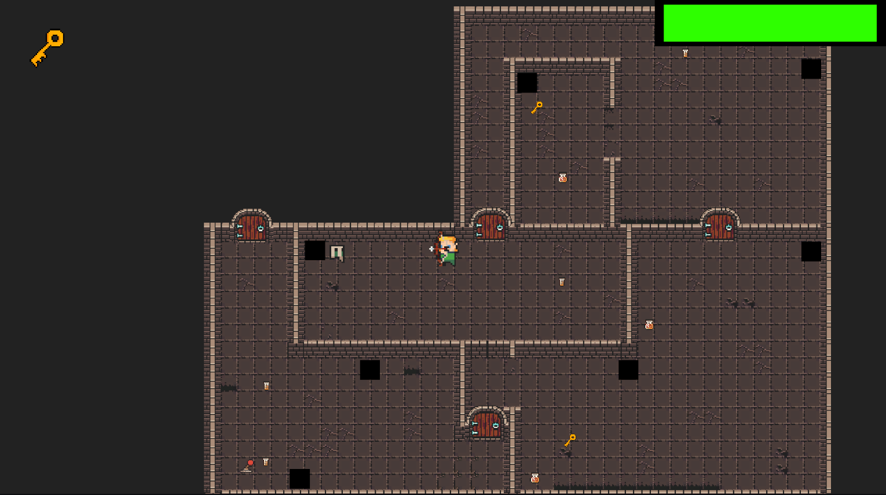

01

Gauntlet Alpha
DUNGEON CRAWLER · UNITY
A group assignment project inspired by the arcade game, Gauntlet. My contribution focused on implementing gameplay mechanics such as the Archer class and the enemy AI.
More about this project
We were assigned to create a dungeon crawler game in Unity in 3 weeks, using Gauntlet as inspiration. I learnt lots from this project, including team collaboration, GitHub version control, and implementing gameplay mechanics. I focused on the Archer class, including its shooting mechanics, as well as creating the enemy AI.